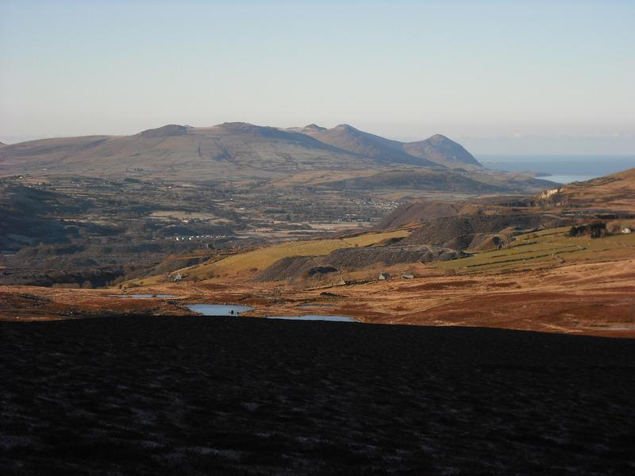
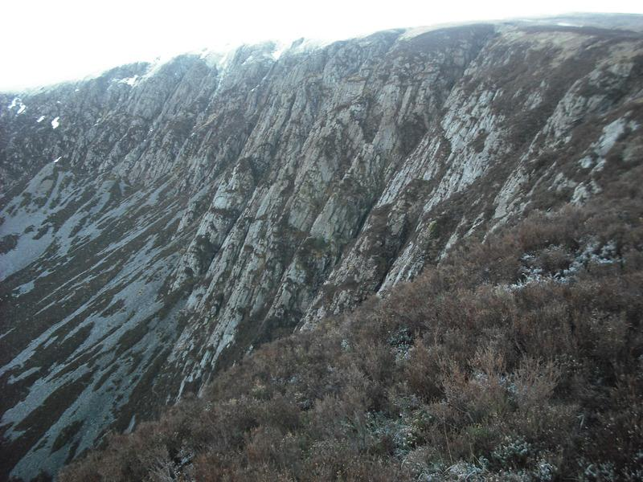
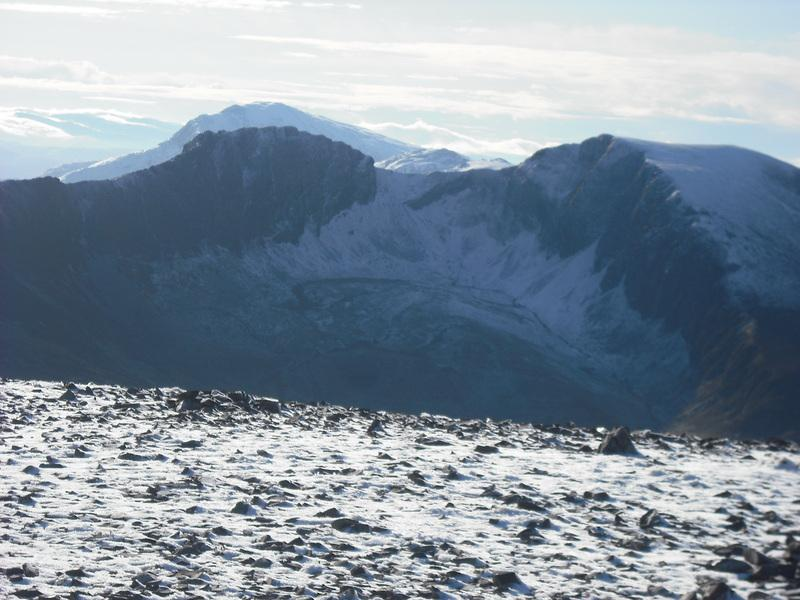
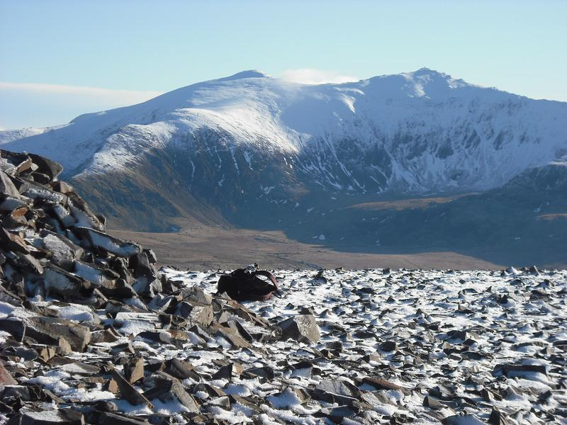
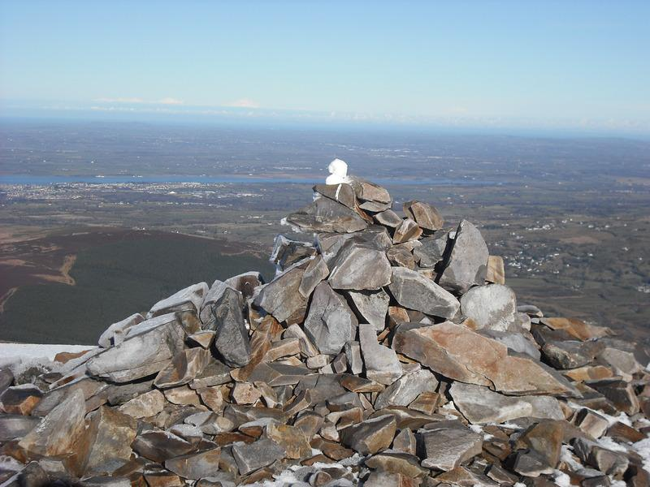

Mynydd Mawr
Mynydd Mawr is an outlier of the Moel Hebog group and is situated between Snowdon and the Nantlle Ridge. It's not very high - 698m or 2269ft, but because of it's position the views from the top are spectacular.
Looking NW from Mynydd Mawr
{kind=link}
Most people start from Rhyd Ddu, the route going past the Craig y Bera, which has the excellent climb Angel Pavement. However, we were staying in the adjacent valley at Hen Ysgubor, which is at the foot of the mountain, so that's where I started my climb.
Craig Cwm Du
{kind=link}
Please note that you can't follow the exact route I describe unless you are staying in the house, as it crosses farmland belonging to the house. However, it's possible to start on the road between Waunfawr and Rhosgadfan (SH 514583).
From Hen Ysgubor I walked up the fields behind the house to reach the edge of the trees at approximately 532566.

From the top of the first steep rise trending generally left brings you out to a stone wall at !!!!! It's possible to cross the wall in the corner of the field via the stone sheepfold (528559) by going through the holes under the wall. There are also several big flat stones on top of the wall at various points. If you are very careful not to damage the wall, you can climb over the wall.
The track up the Eastern slope (not marked on the map) of the mountain is obvious from here. There is a steep pull up to some old mine workings, surrounded by a fence (be careful not to fall in). The path continues steeply upwards and contours along the edge of Craig Cwm Du. These vegetated cliffs provide some good Winter climbs in suitable, but rare, conditions.
As you reach the top the path becomes fainter and you need to bear right. In poor visibility you will probably need to use your compass. It seems a long pull up to the summit, which isn't visible until your are about a hundred yards away. However, once you get there the views are stunning. Like Moel Siabod, Mynydd Mawr is an isolated summit and so provides extensive views of the other peaks. On one side you have the Nantlle Ridge and on the other Snowdon and the Glyders. There are also good views over Caernarfon and Anglesey.
From the summit you can descend to Rhydd Ddu, or simply retrace your steps.
Nantlle Ridge from Mynydd Mawr
{kind=link}
Snowdon from the summit of Mynydd Mawr
{kind=link}
Looking towards Anglesey from the summit of from Mynydd Mawr
{kind=link}